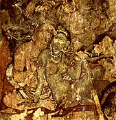

India
From Wikipedia, the free encyclopedia
India, officially the Republic of India (Bharat Ganarajya),is a country in South Asia. It is the seventh-largest country by area, the second-most populous country (with over)1.2 billion people and the most populous democracy in the world. It is bounded by the Indian Ocean on the south, the Arabian Sea on the southwest, and the Bay of Bengal on the southeast. It shares land borders withPakistan to the west; China, Nepal, and Bhutan to the northeast; and Myanmar (Burma) and Bangladesh to the east. In the Indian Ocean, India is in the vicinity of Sri Lanka . India's Andaman and Nicobar Islands share a maritime border with Thailand and Indonesia and Maldives
The Indian subcontinent was home to the urban Indus Valley Civilisation of the 3rd millennium BCE. In the following millennium, the oldest scriptures associated with Hinduism began to be composed. Social stratification, based on caste, emerged in the first millennium BCE, and Buddhism and Jainism arose.A nationalist movement emerged in the late 19th century, which later, under Mahatma Gandhi , was noted for nonviolent resistance and led to India's independence in 1947.
In 2016, a survey on World Tourism rankings compiled by United Nations World Tourism Organization, the nation is visited by approximately 14.6 million tourists every year (2016), making it the 8th most visited country in the Asia-Pacific.
1.Etymology
Main article: Names for India
India is derived from Indus , which originates from the Old Persian word Hindu.The latter term stems from the Sanskrit word Sindhu , which was the historical local appellation for the Indus River.The ancient Greeks referred to the Indians as Indoi which translates as "The people of the Indus".
Hindustan Hindi and Urdu Persian name for India dating back to the 3rd century BCE. It was introduced into India by the Mughals and widely used since then. Its meaning varied, referring to a region that encompassed northern India and Pakistan or India in its entirety.Currently, the name may refer to either the northern part of India or the entire country.
History
Main articles: History of India and History of the Republic of India
Ancient India
The earliest authenticated humanremains in South Asia date to about 30,000 years ago. Nearly contemporaneous Mesolithic rock art sites have been found in many parts of the Indian subcontinent, including at the Bhimbetka rock shelters in Madhya Pradesh. Around 7000 BCE, one of the first known Neolithic settlements appeared on the subcontinent in Mehrgarh and other sites in the subcontinent.These gradually developed into the Indus Valley Civilisation, the first urban culture in South Asia;it flourished during 2500-1900 BCE in northeast Afghanistan to Pakistan and northwest India.Centred around cities such as Mohenjo-daro, Harappa, Dholavira, and Kalibangan , and relying on varied forms of subsistence, the civilisation engaged robustly in crafts production and wide-ranging trade.
|  |
In the late Vedic period , around the 6th century BCE, the small states and chiefdoms of the Ganges Plain and the north-western regions had consolidated into 16 major oligarchies and monarchies that were known as the mahajanapadas The emerging urbanisation gave rise to non-Vedic religious movements, two of which became independent religions. Jainism came into prominence during the life of its exemplar, Mahavira.Buddhism, based on the teachings of Gautama Buddha , attracted followers from all social classes excepting the middle class; chronicling the life of the Buddha was central to the beginnings of recorded history in India.In an age of increasing urban wealth, both religions held up renunciation as an ideal,and both established long-lasting monastic traditions. Politically, by the 3rd century BCE, the kingdom of Magadha had annexed or reduced other states to emerge as the Mauryan Empire |
|
Medieval India
 |
The Indian early medieval age, 600 CE to 1200 CE, is defined by regional kingdoms and cultural diversity. When Harsha of Kannauj , who ruled much of the Indo-Gangetic Plain from 606 to 647 CE, attempted to expand southwards, he was defeated by the Chalukya ruler of the Deccan.When his successor attempted to expand eastwards, he was defeated by the Pala king of Bengal When the Chalukyas attempted to expand southwards, they were defeated by the Pallavas from farther south, who in turn were opposed by the Pandyas and the Cholas from still farther south.No ruler of this period was able to create an empire and consistently control lands much beyond his core region. During this time, pastoral peoples whose land had been cleared to make way for the growing agricultural economy were accommodated within caste society, as were new non-traditional ruling classes.The caste system consequently began to show regional differences. In the 6th and 7th centuries, the first devotional hymns were created in the Tamil language.They were imitated all over India and led to both the resurgence of Hinduism and the development of all modern languages of the subcontinent.Indian merchants, scholars, and sometimes armies were involved in this transmission; South-East Asians took the initiative as well, with many sojourning in Indian seminaries and translating Buddhist and Hindu texts into their languages. |
|
Geography
|
India comprises the bulk of the Indian subcontinent, lying atop the Indian tectonic plate and part of the Indo-Australian Plate.India's defining geological processes began 75 million years ago when the Indian plate, then part of the southern supercontinent Gondwana, began a north-eastward drift caused by seafloor spreading to its south-west, and later, south and south-east. Simultaneously, the vast Tethyn oceanic crust, to its northeast, began to subduct under the Eurasian plate.These dual processes, driven by convection in the Earth's mantle, both created the Indian Ocean and caused the Indian continental crust eventually to under-thrust Eurasia and to uplift the Himalayas Immediately south of the emerging Himalayas, plate movement created a vast trough that rapidly filled with river-borne sediment and now constitutes the Indo-Gangetic Plain Cut off from the plain by the ancient Aravalli Range lies the Thar Desert. |

|
|
Politics
|
India is the world's most populous democracy.A parliamentary republic with a multi-party system, it has seven recognised national parties ,including the Indian National Congress and the Bharatiya Janata Party (BJP), and more than 40 regional parties. The Congress is considered centre-left in Indian political culture ,and the BJP right-wing.For most of the period between 1950 when India first became a republic and the late 1980s,the Congress held a majority in the parliament. Since then, however, it has increasingly shared the political stage with the BJP,as well as with powerful regional parties which have often forced the creation of multi-party coalitions at the centre. |
Parliament of India | |